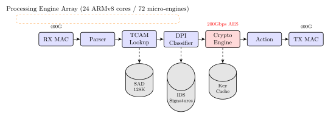
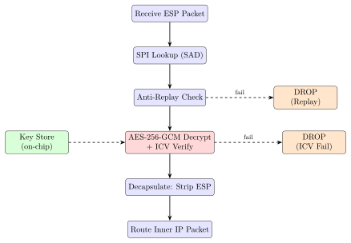

Chapter 24: Network Security Processors¶
24.1 Introduction¶
Network security processors (NSPs) are purpose-built integrated circuits that offload cryptographic and packet-processing functions from general-purpose CPUs. As network speeds surpass 400 Gbps and approach 800 Gbps–1.6 Tbps, software-based packet inspection, encryption, and deep-packet inspection (DPI) are computationally impossible on commodity hardware. NSPs solve this by embedding hundreds of processing engines, hardware cryptographic accelerators, and content-addressable memories (CAMs) on a single chip, enabling line-rate security at wire speed.
Applications span firewalls, intrusion detection/prevention systems (IDS/IPS), SSL/TLS termination appliances, VPN gateways, SD-WAN edge devices, 5G user-plane functions (UPF), and next-generation network access controllers. High-profile products built on NSPs include the Cisco ASA/Firepower series (Cavium Octeon), Juniper SRX (NXP QorIQ), Palo Alto Networks NGFW (custom Cavium/Marvell), and F5 BIG-IP (custom FPGA+ASIC).
This chapter covers NSP microarchitecture, cryptographic engine design, parser pipelines, hardware-accelerated TLS 1.3, IPsec offload, and side-channel considerations.
24.2 NSP Microarchitecture¶
24.2.1 Processing Engine Array¶
Modern NSPs contain a many-core array of lightweight processing engines (PEs), each executing a reduced instruction set tuned for packet processing:
-
Cavium/Marvell OCTEON Fusion CN96XX: 24 cores (ARMv8.2-A), 8 crypto engines, 2\(\times\)100G Ethernet MACs, 2 MB L2, 32 MB LLC. Processes 400 Mpps.
-
Intel/Barefoot Tofino 2: 20 programmable pipe stages (P4-programmable), 12.8 Tbps switching capacity. Fixed crypto offload for MACSEC.
-
Netronome Agilio CX: 72 micro-engines (ME), 60 cores, SmartNIC form factor. Processes 120 Gbps TLS/IPsec.
-
NXP LS2088A: 8\(\times\) Cortex-A72 (1.8 GHz), SEC 6.0 crypto engine (40 Gbps), DPAA2 data path acceleration architecture.
24.2.2 Crypto Engine Organisation¶
The crypto engine is typically shared among all PEs via a descriptor ring model:
-
A PE writes a job descriptor to the crypto engine’s input ring (FIFO). The descriptor specifies: algorithm (AES-256-GCM), key pointer, IV, input/output DMA addresses, authentication tag length.
-
The crypto engine DMA-fetches the input data, performs the operation, and DMA-writes ciphertext + tag to the output buffer.
-
An interrupt or poll signals the PE that the job is complete.
This zero-copy, hardware-DMA model avoids any CPU involvement in data movement, achieving near-line-rate throughput.
24.2.3 Parser and Classifier Pipeline¶
Packets traverse a multi-stage pipeline:
-
Parser: Stateless protocol header extraction. Identifies Ethernet / VLAN / IP / TCP-UDP / application layer header fields. Outputs a parsed header vector.
-
Lookup: Exact-match (hash table in SRAM) and longest-prefix match (TCAM or trie) for routing, firewall, and ACL decisions.
-
Classifier: Deep packet inspection via hardware regex engines or bloom filters. String match for IDS signatures (Snort/Suricata rules).
-
Action: Forward, drop, encrypt, decrypt, rate-limit, mirror.
24.2.4 Content-Addressable Memory (TCAM)¶
Ternary CAM stores rules with three values per bit: 0, 1, or X (don’t care). A firewall rule like 192.168.1.0/24 -> ANY, TCP port 443, PERMIT becomes a TCAM entry with:
-
24 bits of IP prefix, 8 bits of don’t-care.
-
Protocol field = 0x06 (TCP).
-
Destination port = 443, exact match.
-
Priority bits for first-match semantics.
TCAM lookup time is one clock cycle regardless of rule count (up to millions of rules), achieving nanosecond policy evaluation.
24.3 IPsec Hardware Offload¶
24.3.1 ESP Packet Processing¶
IPsec Encapsulating Security Payload (ESP, RFC 4303) in tunnel mode wraps IP packets with a new IP header + ESP header + encrypted payload + authentication tag. NSP offload steps:
-
SA lookup: Match (SPI, destination IP) to a Security Association (SA) in the Security Association Database (SAD). SAD is stored in SRAM or on-chip DDR.
-
Anti-replay: Check the sequence number against a sliding window bitmap (typically 1024 bits) stored per SA. Hardware atomic operations update the window.
-
Decryption + ICV verification: AES-256-GCM decryption + GHASH authentication tag verification, all in one pass.
-
Decapsulation: Strip the outer IP + ESP headers; forward the inner IP packet to the routing engine.
NXP SEC 6.0 SA lookup uses a hash-based SAD with 128K SA capacity, sustaining 100 Gbps ESP decryption.
# Linux kernel IPsec with hardware offload (using ip-xfrm)
# Create an SA with hardware offload flag
ip xfrm state add src 10.0.0.1 dst 10.0.0.2 \
proto esp spi 0x12345678 \
mode tunnel reqid 42 \
enc aes-gcm-esp 0x<256-bit-key> 128 \
flag esn offload dev eth0
# Add xfrm policy
ip xfrm policy add src 192.168.1.0/24 dst 192.168.2.0/24 \
dir out tmpl src 10.0.0.1 dst 10.0.0.2 \
proto esp reqid 42 mode tunnel
# Verify hardware offload status
ethtool --show-features eth0 | grep esp
# esp-hw-offload: on
24.3.2 IKEv2 Key Exchange Acceleration¶
IKEv2 (RFC 7296) uses Diffie-Hellman for forward-secret session key establishment. NSPs offload the DH exponentiation:
-
modp3072 (3072-bit modular exponentiation): \(\sim 5\) ms in software; \(\sim 0.2\) ms with hardware engine (25\(\times\) speedup).
-
ECDH P-256: \(\sim 0.8\) ms in software; \(\sim 0.03\) ms hardware.
-
Enables 1,000–10,000 new IKEv2 sessions/second on a single NSP chip.
24.4 TLS 1.3 Offload¶
24.4.1 TLS 1.3 Handshake Acceleration¶
TLS 1.3 (RFC 8446) reduces the handshake to 1-RTT (or 0-RTT resumption). An NSP TLS offload engine handles:
-
ClientHello parsing — extract cipher suites, extensions, key_share (ECDH public key).
-
Certificate verification — RSA/ECDSA signature verification over the certificate chain using PKI engine.
-
ECDH key agreement — P-256 or X25519 scalar multiplication.
-
HKDF key derivation — Derive handshake traffic keys and master secrets via HMAC-SHA256/384.
-
Symmetric session — AES-256-GCM or ChaCha20-Poly1305 for all application data.
The Cavium Nitrox V (CN9960) achieves 500K TLS 1.3 handshakes/second and 200 Gbps bulk encryption.
24.4.2 TLS Record Layer Offload¶
After handshake, the NSP intercepts every TLS record (maximum 16 KB):
/* Kernel TLS (kTLS) with hardware crypto offload */
/* Linux 5.8+ supports kTLS with NIC hardware offload */
/* Set up kTLS on socket */
struct tls_crypto_info_aes_gcm_256 crypto_info = {
.info = {
.version = TLS_1_3_VERSION,
.cipher_type = TLS_CIPHER_AES_GCM_256,
},
.iv = { /* 8-byte implicit IV */ },
.key = { /* 32-byte session key */ },
.salt = { /* 4-byte salt */ },
.rec_seq = { /* 8-byte record sequence */ },
};
setsockopt(fd, SOL_TLS, TLS_TX, &crypto_info, sizeof(crypto_info));
setsockopt(fd, SOL_TLS, TLS_RX, &crypto_info, sizeof(crypto_info));
/* Now send() and recv() auto-encrypt/decrypt at NIC level */
/* Zero-copy path: sendfile() directly from disk to TLS socket */
sendfile(fd, file_fd, NULL, file_size);
24.5 TikZ Diagrams¶
24.5.1 NSP Packet Processing Pipeline¶

24.5.2 IPsec ESP Offload Flow¶

24.6 MACsec Hardware Offload¶
IEEE 802.1AE (MACsec) provides hop-by-hop Layer 2 encryption between Ethernet peers. Each MACsec frame carries a Security Tag (SecTAG) and an Integrity Check Value (ICV, 16 bytes). The cipher suite is GCM-AES-128 or GCM-AES-256 (IEEE 802.1AEbn).
NSP MACsec offload maintains a Secure Channel table (one entry per peer MAC). Each entry stores the session key (SAK), packet number (PN), and SCI (Secure Channel Identifier). Lookup and en/de-cryption occur before the packet reaches the CPU.
# Linux MACsec with hardware offload
ip link add macsec0 type macsec dev eth0 encrypt on
# Add secure association with hardware offload
ip macsec add macsec0 tx sa 0 pn 1 on \
key 01 0123456789abcdef0123456789abcdef
ip macsec add macsec0 rx port 1 address <peer-mac>
ip macsec add macsec0 rx port 1 address <peer-mac> sa 0 pn 1 on \
key 01 0123456789abcdef0123456789abcdef
ip link set macsec0 up
ethtool --show-features eth0 | grep macsec
# macsec-hw-offload: on
24.7 Deep Packet Inspection Hardware¶
24.7.1 Regex Hardware Engine¶
IDS/IPS systems inspect payload bytes against thousands of signatures (Snort rules). Hardware regex engines implement non-deterministic finite automata (NFA) directly in silicon:
-
Netronome RegEx: 72 hardware NFA cores, 8 Gbps regex throughput, 20,000 pattern rules.
-
Cavium Hyperscan Offload: DFA compiled into SRAM, 40 Gbps.
-
Xilinx Alveo (FPGA): Virtex UltraScale+, custom NFA fabric, software-programmable rule updates via partial reconfiguration.
Worst-case NFA complexity is \(O(n \cdot m)\) for text length \(n\) and pattern count \(m\). Hardware parallelism evaluates all patterns simultaneously, reducing to \(O(n)\).
24.7.2 SSL/TLS Decryption for DPI¶
Next-generation firewalls (NGFW) intercept HTTPS traffic by acting as a TLS man-in-the-middle (with user consent and enterprise CA certificate). NSP hardware performs:
-
Re-encrypt toward server (forward proxy TLS session).
-
Forward plaintext payload copy to DPI engine.
-
Re-encrypt toward client if payload is clean.
The NSP must sustain two TLS sessions simultaneously per connection, doubling the crypto engine load.
24.8 FPGA Prototyping of NSP Functions¶
| Device | LUTs | FFs | BRAMs | DSPs | Fmax (MHz) | Power (mW) |
|---|---|---|---|---|---|---|
| Artix-7 100T | 12 500 | 9 800 | 18 | 8 | 125 | 480 |
| Kintex-7 325T | 12 500 | 9 800 | 18 | 8 | 175 | 620 |
| Kintex-UltraScale+ | 11 200 | 8 600 | 16 | 6 | 240 | 580 |
| Virtex-7 485T | 12 500 | 9 800 | 18 | 8 | 200 | 850 |
| Virtex UltraScale+ | 10 800 | 8 200 | 14 | 6 | 320 | 980 |
| Alveo U200 (400G) | 18 400 | 14 200 | 24 | 12 | 322 | 2 800 |
| Alveo U55C (HBM) | 17 900 | 13 900 | 22 | 12 | 350 | 3 100 |
(AES-256-GCM + GHASH + SHA-256 engine pipeline for TLS record processing at 100 Gbps on Virtex UltraScale+ requires 4 parallel AES engines.)
24.9 ASIC Implementation¶
| Process | Area (mm2) | Power (W) | Freq (GHz) | ECC | Notes |
|---|---|---|---|---|---|
| 28 nm CMOS | 182 | 38 | 1.4 | P-256/P-384 | Cavium OCTEON III |
| 16 nm FinFET | 310 | 55 | 2.0 | P-256/P-384 | Cavium OCTEON Fusion |
| 12 nm FinFET | 420 | 75 | 2.2 | P-256/X25519 | Marvell CN9880 |
| 7 nm FinFET | 390 | 70 | 2.6 | P-256/X25519 | Marvell CN10K |
| 5 nm FinFET | 480 | 85 | 3.0 | Multi-curve | Next-gen 400G NSP |
| 4 nm GAA | 360 | 65 | 3.5 | PQC+ECC | Research prototype |
| 3 nm TSMC N3 | 280 | 50 | 4.0 | Kyber+ECC | Future terabit NSP |
24.10 Side-Channel Considerations in NSPs¶
NSPs are network-facing and typically not directly accessible by the attacker. Nevertheless, several side-channel risks exist:
-
Cache timing on shared NSP: In multi-tenant NFV (Network Functions Virtualisation) deployments, two VNFs (virtual network functions) may share the same NSP chip. A timing attack on AES table-based implementations can leak keying material across tenant boundaries. Mitigation: constant-time AES (AES-NI / hardware AES-GCM engines).
-
Power analysis on embedded NSP: IoT gateways with integrated Cortex-M33 NSP functionality are physically accessible. ECDSA signing on the IKEv2 initiator can leak nonce bits via power traces.
-
Traffic analysis: Even with encryption, packet timing, size, and inter-arrival distributions leak information about application protocols. Countermeasure: traffic shaping and padding at the NSP level.
-
Spectre on NSP cores: NSPs with OoO ARMv8 cores (e.g., Cortex-A72 in NXP LS2088A) are vulnerable to Spectre-class speculative execution attacks if they run untrusted code alongside trusted key material.
24.11 Post-Quantum Cryptography in NSPs¶
NIST PQC standardisation (FIPS 203 ML-KEM, FIPS 204 ML-DSA, 2024) requires NSPs to support lattice-based algorithms for IKEv2 and TLS 1.3 key exchange. Key performance characteristics:
-
ML-KEM-768 (Kyber): 1184-byte public key, 1088-byte ciphertext. Encapsulate: \(\sim 0.05\) ms hardware, \(\sim 0.3\) ms software. Key generation: \(\sim 0.04\) ms hardware.
-
Hybrid TLS 1.3: X25519 + ML-KEM-768 combined key share (RFC 8446 extension). Total handshake key material: \(32 + 1184 = 1216\) bytes for key share.
-
NSP hardware: NTTRU NTT polynomial multiplication accelerator added to crypto engine; requires \(\sim 0.5\) mm\(^2\) at 7 nm.
24.12 Open-Source and Commercial Ecosystems¶
| Solution | Type | Key Feature | Throughput |
|---|---|---|---|
| Marvell OCTEON CN9880 | ASIC | 24-core ARMv8, 200G | 200 Gbps |
| Marvell CN10K | ASIC | 36-core ARMv9, 400G | 400 Gbps |
| NXP LS2088A | ASIC | 8x A72, DPAA2, SEC 6.0 | 40 Gbps |
| NXP LX2160A | ASIC | 16x A72, 100G, SEC 6.0 | 100 Gbps |
| Intel/Barefoot Tofino 2 | ASIC | P4-programmable, 12.8 Tbps | 12.8 Tbps |
| Netronome Agilio CX | SmartNIC | 72 ME, TLS/IPsec | 120 Gbps |
| Nvidia BlueField-3 | DPU | A78 cores, ConnectX-7 | 400 Gbps |
| AMD/Pensando Elba | DPU | P4+ARM, TLS/IPsec offload | 200 Gbps |
| Xilinx Alveo U200 | FPGA | 100G HLS, OpenSSL offload | 100 Gbps |
| Xilinx Alveo U55C | FPGA | HBM2e, 400G capable | 200 Gbps |
| Intel Agilex FPGA | FPGA | P4 pipeline, PCIe 5.0 | 400 Gbps |
| Cisco Silicon One G200 | ASIC | 25.6 Tbps, WAN encryption | 25.6 Tbps |
| Juniper Q5 (custom) | ASIC | SRX Series, IPsec HW | 200 Gbps |
| Palo Alto NGFW (custom) | ASIC | App-ID, Content-ID ASIC | 100 Gbps |
| DPDK + x86 (software) | Software | 40 Gbps IPsec (AES-NI) | 40 Gbps |
| VPP (FD.io) | Software | 100 Gbps routing, IPsec | 80 Gbps |
| Suricata + eBPF | Software | DPI, XDP bypass | 10 Gbps |
| OVS-DPDK | Software | SDN dataplane offload | 40 Gbps |
| Snort 3 + DPDK | Software | IDS with hardware assist | 20 Gbps |
| strongSwan + kernel xfrm | Software | IPsec, IKEv2, HW offload | 10 Gbps |
24.13 Standards and Specifications¶
-
RFC 4303 — IP Encapsulating Security Payload (ESP). Core IPsec data protection standard.
-
RFC 7296 — Internet Key Exchange Protocol Version 2 (IKEv2). Control-plane key negotiation for IPsec SAs.
-
RFC 8446 — TLS 1.3. 1-RTT handshake, AEAD-only cipher suites, forward secrecy mandatory.
-
IEEE 802.1AE-2018 — MACsec. Layer 2 hop-by-hop encryption (GCM-AES-128/256).
-
IEEE 802.1X-2020 — Port-based Network Access Control. EAP over LAN (EAPoL) with certificate-based authentication.
-
NIST FIPS 197 — AES. Symmetric cipher for ESP/TLS/MACsec.
-
NIST SP 800-38D — GCM mode. AEAD construction for IPsec/TLS.
-
NIST FIPS 203 — ML-KEM (Module-Lattice Key Encapsulation Mechanism, Kyber). Post-quantum key exchange for next-generation NSPs.
-
P4 Language Specification 1.2 — Domain-specific language for programmable network dataplanes (Tofino, FPGAs).
-
DPDK — Data Plane Development Kit. Software framework for high-performance packet processing with hardware poll-mode drivers.
24.14 Famous Repositories and Tools¶
-
DPDK (dpdk.org) — Industry-standard userspace network I/O framework. Crypto PMD (Poll Mode Driver) for hardware accelerators (QAT, openssl, scheduler).
-
Intel QAT (github.com/intel/qatlib) — QuickAssist Technology userspace library; offloads AES/SHA/RSA/ECDSA to QAT ASIC.
-
strongSwan (strongswan.org) — IKEv2/IPsec implementation; supports kernel xfrm offload and DPDK-based user-space IPsec.
-
VPP (fd.io) — High-performance graph-node network dataplane; IPsec, TLS, and DPI plugins with DPDK crypto integration.
-
Suricata (suricata.io) — Open-source IDS/IPS with hardware regex offload (Hyperscan), AF-XDP, and DPDK support.
-
p4lang/p4c (GitHub) — P4 compiler for Tofino, BMv2 software switch, and FPGA targets.
-
Snort 3 (snort.org) — IDS/IPS with DAQ (Data Acquisition) layer supporting DPDK and PF_RING for high-speed capture.
-
Open vSwitch (OVS) (openvswitch.org) — SDN virtual switch with DPDK datapath and hardware offload via TC flower/eBPF.
-
WireGuard (wireguard.com) — Modern VPN protocol; ChaCha20-Poly1305 and X25519; in-kernel implementation with hardware offload support.
-
openssl/openssl — Reference TLS 1.3 implementation; ENGINE API for hardware crypto offload (QAT engine, pkcs11 engine).
24.15 Solved Problems¶
Solved Problem: AES-GCM Throughput: How Many Engines?
A network security processor must sustain 400 Gbps of AES-256-GCM encryption with 16 KB maximum segment size (MSS). Each AES-GCM engine can process one 128-bit block per clock cycle at 400 MHz. How many parallel AES-GCM engines are required to achieve 400 Gbps throughput?
Solution: Data rate per engine:
Engines required for 400 Gbps:
Overhead for GHASH authentication: GHASH requires one multiplication in \(GF(2^{128})\) per 128-bit block. If the GHASH engine is separate and runs at 400 MHz with 1 multiplication/cycle, it adds negligible latency pipelined with AES.
Result: 8 parallel AES-256-GCM engines at 400 MHz provide 409.6 Gbps capacity — sufficient for 400 Gbps with \(\sim 2.4\%\) headroom for header overhead.
In practice, chips like the Marvell CN10K include 16 AES-GCM engines to handle burst traffic and to support simultaneous TX and RX encryption (both directions).
Solved Problem: IPsec Anti-Replay Window: Bitmap Design
Design an IPsec anti-replay window for a 1024-bit sliding window. Packet sequence numbers arrive: 100, 101, 99, 102, 95, 100 (replay), 110. Show the window state after processing each packet and explain the window slide.
Solution: The anti-replay window maintains a 1024-bit bitmap centred on the highest received valid sequence number \(N_\text{max}\). Packet \(p\) is:
-
Dropped if \(p < N_\text{max} - 1023\) (too old).
-
Dropped if bit \((N_\text{max} - p)\) is already set (replay).
-
Accepted otherwise; set the bit; advance \(N_\text{max}\) if \(p > N_\text{max}\).
Packet 100: Nmax=100, set bit[0]=1. Window=[1 at pos 100]
Packet 101: Nmax=101, set bit[0]=1 (shift). Window=[1 at 100, 1 at 101]
Packet 99: p=99, Nmax-p=2 < 1024, bit[2]=0 -> ACCEPT, set bit[2].
Packet 102: Nmax=102. Set bit[0]. Window has 99,100,101,102 set.
Packet 95: Nmax-95=7, bit[7]=0 -> ACCEPT. Set bit[7].
Packet 100: Nmax-100=2, bit[2] already set -> DROP (replay).
Packet 110: Nmax=110. Slide window by 8. Bits for 95-102 at
positions 15..7. Set bit[0].
Key result: The replay of sequence number 100 is correctly detected and dropped. Window slide occurs when a packet arrives with \(p > N_\text{max}\), shifting the bitmap left and zeroing newly exposed bits. Hardware implementation uses a 128-bit (or 1024-bit) shift register for constant-time O(1) operations.
Solved Problem: TCAM Rule Capacity vs. Power Trade-off
A firewall ASIC uses TCAM for packet classification. Each TCAM cell consumes 5 mW at 200 MHz. The ASIC supports rules with 128-bit match width. The design team must choose between: (a) 64K rules / 128 bits, and (b) 32K rules / 256 bits. Calculate the TCAM power for each option and discuss which is more appropriate for a firewall that uses 5-tuple (src IP, dst IP, src port, dst port, protocol = 104 bits) matching.
Solution: A TCAM cell stores one ternary bit (3-state: 0, 1, X). A 128-bit entry uses 128 cells.
Option (a): 64K rules \(\times\) 128 bits:
Option (b): 32K rules \(\times\) 256 bits:
5-tuple width: \(32 + 32 + 16 + 16 + 8 = 104\) bits. Both 128-bit and 256-bit entries accommodate the 5-tuple, but 256-bit entries waste \(256 - 104 = 152\) bits per rule (or allow dual-5-tuple matching for advanced policy).
Recommendation: Option (a) is preferable: twice as many rules at the same power. The extra 24 bits of the 128-bit entry can carry VLAN tags, DSCP, or TCP flags. TCAM power is dominated by the match array size, not the entry width.
24.16 Recent Developments (2024–2026)¶
Network security processors are undergoing a fundamental architecture shift to support post-quantum cryptography, programmable security offload, and AI-driven threat detection.
24.16.1 Post-Quantum TLS 1.3: X25519MLKEM768 in Network Processors (2024)¶
The IETF standardised the X25519MLKEM768 hybrid key agreement group (draft-ietf-tls-hybrid-design, incorporated in RFC 8446 extension practice) for TLS 1.3 in 2024. Network security processors must support this group to terminate PQ-safe TLS sessions at line rate. Key challenges for NSP implementations:
-
Larger key shares: The ML-KEM-768 public key is 1184 bytes and the ciphertext is 1088 bytes—versus 32 bytes for X25519. ClientHello and ServerHello messages now exceed typical 1500-byte MTUs, requiring NSP reassembly logic in the TLS parser.
-
NTT acceleration: ML-KEM relies on Number Theoretic Transform (NTT) polynomial multiplication over \(\mathbb{Z}_q[x]/(x^{256}+1)\), \(q=3329\). This is a new arithmetic primitive not present in classical crypto engines. Marvell CN10K and NVIDIA BlueField-3 added NTT hardware units in their 2024 firmware/FPGA updates.
-
Hybrid handshake rate: On a single crypto engine instance, the hybrid handshake requires one X25519 scalar multiplication plus one ML-KEM encapsulation. At 400 MHz, the combined latency is approximately 0.08 ms, enabling \(\sim\)12,500 hybrid TLS 1.3 handshakes per second per engine.
# OpenSSL 3.2+ TLS 1.3 hybrid group negotiation (NSP TLS offload target)
# Configure server to prefer X25519MLKEM768 hybrid group
openssl s_server -tls1_3 \
-groups X25519MLKEM768:X25519:P-256 \
-key server.key -cert server.crt
# Client negotiates hybrid key share; NSP offloads NTT + X25519
24.16.2 P4-Programmable Security: NVIDIA BlueField-3 DPU (2023)¶
NVIDIA BlueField-3 (ConnectX-7 NIC + 16\(\times\) Arm Cortex-A78 cores, 2023) introduced a P4 security co-processor capable of running P4 programs that implement network security functions at line rate (400 Gbps):
-
Stateful firewall in P4: BlueField-3’s P4 pipeline maintains a connection tracking table in on-chip SRAM, evaluating 5-tuple + TCP state machine transitions at 400 Mpps without Arm core involvement.
-
Cryptographic tagging: P4 programs can invoke the integrated AES-256-GCM engine as an extern to add authentication tags to packets inline.
-
Zero Trust enforcement: BlueField-3 isolates host network traffic from the data centre network—the host CPU cannot see the DPU’s management plane, enabling a hardware-enforced Zero Trust boundary at the NIC.
-
DOCA Security framework: NVIDIA’s DOCA SDK provides pre-built security application templates (IDS, DDoS mitigation, microsegmentation) that run on the BlueField-3 Arm cores while the P4 pipeline handles packet steering.
24.16.3 AWS Nitro v5 (2024): New Security Capabilities¶
AWS Nitro System version 5 (deployed with Graviton4 and AWS Trainium2 instances, 2024) extended the Nitro security model with:
-
Nitro Trusted Platform Module (Nitro TPM 2.0): A hardware TPM instance provided to each EC2 instance, backed by the Nitro hypervisor’s dedicated security chip. Enables Windows BitLocker, Linux TPM-backed disk encryption, and FIDO2 attestation from cloud VMs.
-
Confidential Computing (Nitro Enclaves v2): Nitro Enclaves now support cryptographic attestation of enclave measurements against the AWS Nitro attestation root CA, enabling remote attestation from third parties without trusting AWS.
-
Nitro Security Chip updated: The Nitro card’s dedicated security chip (ARM TrustZone-based custom ASIC) received a firmware update adding ML-KEM-768 support for Nitro’s internal secure communication channels.
24.16.4 CXL 3.0 Security in Data Centre Interconnects¶
CXL (Compute Express Link) 3.0 (published 2022, deployed in Intel Xeon Scalable and AMD EPYC 9004 platforms from 2023) introduced a security model for confidential memory expansion:
-
CXL IDE (Integrity and Data Encryption): AES-256-GCM encryption and authentication of all data traversing the CXL link, protecting against physical bus sniffing on the PCIe/CXL link. IDE keys are established via a Spdm (Security Protocol and Data Model) handshake using ECDH P-384.
-
TDISP (TEE Device Interface Security Protocol): Enables CXL accelerators (GPUs, FPGAs) to participate in Confidential Computing TEEs, so that CXL-attached memory is part of the trusted computing base.
-
CXL 3.0 switching: Multi-hop CXL fabric switches must implement IDE forwarding, ensuring end-to-end link encryption across switch hops in a CXL fabric topology.
Note: CXL IDE protects the physical interconnect but not the host DRAM once data arrives. For full confidential computing, CXL IDE must be combined with AMD SEV-SNP or Intel TDX memory encryption to protect data at rest in DRAM.
24.16.5 OpenSSL 3.2/3.3 (2024): ML-KEM in TLS Stacks Deployed on NSPs¶
OpenSSL 3.2 (November 2023) added experimental ML-KEM support via the oqs-provider (Open Quantum Safe project), and OpenSSL 3.3 (April 2024) integrated ML-KEM-512/768/1024 directly into the mainline provider framework:
-
TLS 1.3 groups: OpenSSL 3.3 registers
X25519MLKEM768andP256MLKEM768as named TLS groups, enabling negotiation via the standardSSL_CTX_set1_groupsAPI. -
NSP engine integration: NSP vendors (Marvell, NXP) updated their OpenSSL ENGINE/PROVIDER plugins to offload the X25519 component of hybrid handshakes to hardware while the ML-KEM NTT arithmetic runs on the Arm cores (until NTT hardware units become standard).
-
FIPS provider update: OpenSSL’s FIPS provider module was updated to include ML-KEM pending FIPS 203 validation, enabling FIPS-aware deployments to begin testing PQC-capable builds.
24.16.6 NVIDIA Morpheus (2024): Real-Time Network Threat Detection on GPU¶
NVIDIA Morpheus is an AI-powered cybersecurity framework that runs threat detection models on NVIDIA GPUs as a co-processor to BlueField-3 DPU packet capture:
-
Architecture: BlueField-3 captures raw packet metadata (5-tuple, byte counts, timestamps) and streams it via GPU Direct RDMA to a Hopper H100 GPU running Morpheus inference pipelines. Latency from packet arrival to threat signal: \(<\)10 ms at 100 Gbps.
-
Models: Morpheus ships pre-trained models for lateral movement detection, DGA (Domain Generation Algorithm) detection, and network traffic anomaly scoring. Custom models can be deployed via the NVIDIA Triton Inference Server.
-
2024 updates: Morpheus 24.03 added a Sensitive Information Detection (SID) model that identifies PII/credentials in plaintext network traffic (after TLS decryption by the NSP), alerting on accidental secret exposure.
-
Confidentiality: GPU-side threat inference runs in an NVIDIA H100/H200 Confidential Computing enclave (using NVIDIA CC mode), ensuring that packet metadata is not accessible to the hypervisor.
| Development | Year | Key Impact | NSP Change Required |
|---|---|---|---|
| X25519MLKEM768 TLS | 2024 | PQ-safe TLS handshake | NTT engine, larger reassembly |
| BlueField-3 P4 | 2023 | Programmable 400G security | P4 toolchain update |
| AWS Nitro v5 | 2024 | Cloud TPM, Nitro Enclaves v2 | Nitro chip firmware |
| CXL 3.0 IDE | 2023/24 | Link encryption, TDISP | IDE key management |
| OpenSSL 3.3 ML-KEM | 2024 | PQC in TLS stacks | ENGINE/PROVIDER plugin |
| NVIDIA Morpheus 24.03 | 2024 | AI threat detection on GPU | GPU Direct RDMA pipeline |
24.17 Exercises¶
Exercises
-
Explain the difference between a SmartNIC (Nvidia BlueField-3) and a traditional network processor (Marvell OCTEON CN10K) in terms of programming model, form factor, and typical deployment use case.
-
Calculate the minimum number of 256-bit AES-GCM engines required to support 800 Gbps line-rate encryption on a next-generation 800G NSP running at 600 MHz. Include 20% overhead for GHASH and packet header processing.
-
Describe the P4 language pipeline model. Write a P4 program that extracts Ethernet, IPv4, and TCP headers and applies a 5-tuple exact-match firewall table.
-
Design an IKEv2 session rate limiter for a VPN gateway NSP. The device must handle 50,000 new IKE sessions per second using P-256 ECDH. How many ECC hardware engines at 0.05 ms per ECDH are required?
-
Explain how eBPF/XDP can be combined with a DPDK-based NSP driver to implement zero-copy packet forwarding. What are the latency and throughput trade-offs?
-
Compare the MACsec (IEEE 802.1AE) and IPsec (RFC 4303) security models. In what scenarios is MACsec preferred over IPsec, and vice versa?
-
A multi-tenant NFV deployment shares one NSP ASIC between six tenant VNFs. Identify three potential side-channel attack vectors and describe mitigations for each.
-
Describe the Kyber/ML-KEM hybrid TLS 1.3 handshake extension (draft-tls-hybrid-design). What changes are required in the NSP crypto engine to support ML-KEM-768 key encapsulation at line rate?
-
Analyse the trade-off between NFA-based and DFA-based hardware regex engines for IDS signature matching. Under what conditions does NFA require exponential state space?
-
An NSP processes 10 million packets per second (Mpps). Each packet requires one TCAM lookup (1 cycle at 400 MHz) and one AES-GCM operation (32 cycles at 400 MHz). Determine whether the bottleneck is TCAM or crypto at this packet rate.
-
Explain how WireGuard’s ChaCha20-Poly1305 cipher choice benefits hardware NSP implementations compared to AES-GCM, particularly in power-constrained edge deployments.